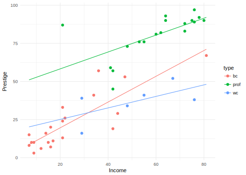
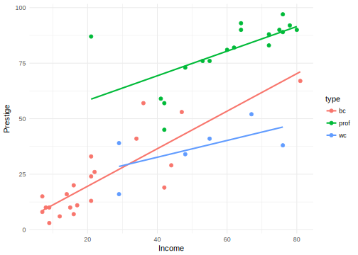

Chapter 18 Duncan Occupational Prestige
18.1 Setup
library("tidyverse")
library("broom")This example makes use of the Duncan Occpuational prestige included in the car package. This is data from a classic sociology paper and contains data on the prestige and other characteristics of 45 U.S. occupations in 1950.
data("Duncan", package = "car")The dataset Duncan contains four variables: type, income, education, and prestige,
glimpse(Duncan)## Observations: 45
## Variables: 4
## $ type <fctr> prof, prof, prof, prof, prof, prof, prof, prof, wc,...
## $ income <int> 62, 72, 75, 55, 64, 21, 64, 80, 67, 72, 42, 76, 76, ...
## $ education <int> 86, 76, 92, 90, 86, 84, 93, 100, 87, 86, 74, 98, 97,...
## $ prestige <int> 82, 83, 90, 76, 90, 87, 93, 90, 52, 88, 57, 89, 97, ...You run a regression in R using the function lm. This runs a linear regression of occupational prestige on income,
lm(prestige ~ income, data = Duncan)##
## Call:
## lm(formula = prestige ~ income, data = Duncan)
##
## Coefficients:
## (Intercept) income
## 2.457 1.080This estimates the linear regression \[
\mathtt{prestige} = \beta_0 + \beta_1 \mathtt{income}
\] In R, \(\beta_0\) is named (Intercept), and the other coefficients are named after the associated predictor.
The function lm returns an lm object that can be used in future computations. Instead of printing the regression result to the screen, save it to the variable mod1,
mod1 <- lm(prestige ~ income, data = Duncan)We can print this object
print(mod1)##
## Call:
## lm(formula = prestige ~ income, data = Duncan)
##
## Coefficients:
## (Intercept) income
## 2.457 1.080Somewhat counterintuitively, the summary function returns more information about a regression,
summary(mod1)##
## Call:
## lm(formula = prestige ~ income, data = Duncan)
##
## Residuals:
## Min 1Q Median 3Q Max
## -46.566 -9.421 0.257 9.167 61.855
##
## Coefficients:
## Estimate Std. Error t value Pr(>|t|)
## (Intercept) 2.4566 5.1901 0.473 0.638
## income 1.0804 0.1074 10.062 7.14e-13 ***
## ---
## Signif. codes: 0 '***' 0.001 '**' 0.01 '*' 0.05 '.' 0.1 ' ' 1
##
## Residual standard error: 17.4 on 43 degrees of freedom
## Multiple R-squared: 0.7019, Adjusted R-squared: 0.695
## F-statistic: 101.3 on 1 and 43 DF, p-value: 7.144e-13The summary function also returns an object that we can use later,
summary_mod1 <- summary(mod1)
summary_mod1##
## Call:
## lm(formula = prestige ~ income, data = Duncan)
##
## Residuals:
## Min 1Q Median 3Q Max
## -46.566 -9.421 0.257 9.167 61.855
##
## Coefficients:
## Estimate Std. Error t value Pr(>|t|)
## (Intercept) 2.4566 5.1901 0.473 0.638
## income 1.0804 0.1074 10.062 7.14e-13 ***
## ---
## Signif. codes: 0 '***' 0.001 '**' 0.01 '*' 0.05 '.' 0.1 ' ' 1
##
## Residual standard error: 17.4 on 43 degrees of freedom
## Multiple R-squared: 0.7019, Adjusted R-squared: 0.695
## F-statistic: 101.3 on 1 and 43 DF, p-value: 7.144e-13Now lets estimate a multiple linear regression,
mod2 <- lm(prestige ~ income + education + type, data = Duncan)
mod2##
## Call:
## lm(formula = prestige ~ income + education + type, data = Duncan)
##
## Coefficients:
## (Intercept) income education typeprof typewc
## -0.1850 0.5975 0.3453 16.6575 -14.661118.2 Coefficients, Standard errors
Coefficients, \(\hat{\boldsymbol{\beta}}\):
coef(mod2)## (Intercept) income education typeprof typewc
## -0.1850278 0.5975465 0.3453193 16.6575134 -14.6611334Variance-covariance matrix of the coefficients, \(\Var{\hat{\boldsymbol{\beta}}}\):
vcov(mod2)## (Intercept) income education typeprof typewc
## (Intercept) 13.7920916 -0.115636760 -0.257485549 14.0946963 7.9021988
## income -0.1156368 0.007984369 -0.002924489 -0.1260105 -0.1090485
## education -0.2574855 -0.002924489 0.012906986 -0.6166508 -0.3881200
## typeprof 14.0946963 -0.126010517 -0.616650831 48.9021401 30.2138627
## typewc 7.9021988 -0.109048528 -0.388119979 30.2138627 37.3171167The standard errors of the coefficients, \(\se{\hat{\boldsymbol{\beta}}}\), are the square root diagonal of the vcov matrix,
sqrt(diag(vcov(mod2)))## (Intercept) income education typeprof typewc
## 3.7137705 0.0893553 0.1136089 6.9930065 6.1087737This can be confirmed by comparing their values to those in the summary table,
summary(mod2)##
## Call:
## lm(formula = prestige ~ income + education + type, data = Duncan)
##
## Residuals:
## Min 1Q Median 3Q Max
## -14.890 -5.740 -1.754 5.442 28.972
##
## Coefficients:
## Estimate Std. Error t value Pr(>|t|)
## (Intercept) -0.18503 3.71377 -0.050 0.96051
## income 0.59755 0.08936 6.687 5.12e-08 ***
## education 0.34532 0.11361 3.040 0.00416 **
## typeprof 16.65751 6.99301 2.382 0.02206 *
## typewc -14.66113 6.10877 -2.400 0.02114 *
## ---
## Signif. codes: 0 '***' 0.001 '**' 0.01 '*' 0.05 '.' 0.1 ' ' 1
##
## Residual standard error: 9.744 on 40 degrees of freedom
## Multiple R-squared: 0.9131, Adjusted R-squared: 0.9044
## F-statistic: 105 on 4 and 40 DF, p-value: < 2.2e-1618.3 Residuals, Fitted Values,
To get the fitted or predicted values (\(\hat{\mathbf{y}} = \mathbf{X} \hat{\boldsymbol\beta}\)) from a regression,
mod1_fitted <- fitted(mod1)
head(mod1_fitted)## accountant pilot architect author chemist minister
## 69.44073 80.24463 83.48580 61.87801 71.60151 25.14476or
mod1_predict <- predict(mod1)
head(mod1_predict)## accountant pilot architect author chemist minister
## 69.44073 80.24463 83.48580 61.87801 71.60151 25.14476The difference between predict and fitted is how they handle missing values in the data. Fitted values will not include predictions for missing values in the data, while predict will include values for
Using predict, we can also predict values for new data. For example, create a data frame with each category of type, and in which income and education are set to their mean values.
Duncan_at_means <-
data.frame(type = unique(Duncan$type),
income = mean(Duncan$income),
education = mean(Duncan$education))
Duncan_at_means## type income education
## 1 prof 41.86667 52.55556
## 2 wc 41.86667 52.55556
## 3 bc 41.86667 52.55556Now use this with the newdata argument,
predict(mod2, newdata = Duncan_at_means)## 1 2 3
## 59.63821 28.31957 42.98070To get the residuals (\(\hat{\boldsymbol{\epsilon}} = \mathbf{y} - \hat{\mathbf{y}}\)).
mod1_resid <- residuals(mod1)
head(mod1_resid) ## accountant pilot architect author chemist minister
## 12.559266 2.755369 6.514200 14.121993 18.398486 61.85524218.4 Broom
The package broom has some functions that reformat the results of statistical modeling functions (t.test, lm, etc.) to data frames that work nicer with ggplot2, dplyr, and friends.
The broom package has three main functions:
glance: Information about the model.tidy: Information about the estimated parametersaugment: The original data with estimates of the model.
glance: Always return a one-row data.frame that is a summary of the model: e.g. R2, adjusted R2, etc.
glance(mod2)## r.squared adj.r.squared sigma statistic p.value df logLik
## 1 0.9130657 0.9043723 9.744171 105.0294 1.170871e-20 5 -163.6522
## AIC BIC deviance df.residual
## 1 339.3045 350.1444 3797.955 40tidy: Transforms into a ready-to-go data.frame the coefficients, SEs (and CIs if given), critical values, and p-values in statistical tests’ outputs
tidy(mod2)## term estimate std.error statistic p.value
## 1 (Intercept) -0.1850278 3.7137705 -0.0498221 9.605121e-01
## 2 income 0.5975465 0.0893553 6.6873093 5.123720e-08
## 3 education 0.3453193 0.1136089 3.0395443 4.164463e-03
## 4 typeprof 16.6575134 6.9930065 2.3820246 2.206245e-02
## 5 typewc -14.6611334 6.1087737 -2.4000125 2.114015e-02augment: Add columns to the original data that was modeled. This includes predictions, estandard error of the predictions, residuals, and others.
augment(mod2) %>% head()## .rownames prestige income education type .fitted .se.fit .resid
## 1 accountant 82 62 86 prof 83.21783 2.352262 -1.217831
## 2 pilot 83 72 76 prof 85.74010 2.674659 -2.740102
## 3 architect 90 75 92 prof 93.05785 2.755775 -3.057851
## 4 author 76 55 90 prof 80.41628 2.589351 -4.416282
## 5 chemist 90 64 86 prof 84.41292 2.360632 5.587076
## 6 minister 87 21 84 prof 58.02779 4.260837 28.972214
## .hat .sigma .cooksd .std.resid
## 1 0.05827491 9.866259 0.0002052803 -0.1287893
## 2 0.07534370 9.857751 0.0013936701 -0.2924366
## 3 0.07998300 9.855093 0.0018611391 -0.3271700
## 4 0.07061418 9.841004 0.0033585648 -0.4701256
## 5 0.05869037 9.825129 0.0043552315 0.5909809
## 6 0.19120532 8.412639 0.5168053288 3.3061127.fitted: the model predictions for all observations.se.fit: the estandard error of the predictions.resid: the residuals of the predictions (acual - predicted values).sigma: is the standard error of the prediction.
The other columns—.hat, .cooksd, and .std.resid are used in regression diagnostics.
18.5 Plotting Fitted Regression Results
Consider the regression of prestige on income,
mod3 <- lm(prestige ~ income, data = Duncan)This creates a new dataset with the column income and 100 observations between the min and maximum observed incomes in the Duncan dataset.
mod3_newdata <- data_frame(income = seq(min(Duncan$income), max(Duncan$income), length.out = 100))We will calculate fitted values for all these values of income.
ggplot() +
geom_point(data = Duncan,
mapping = aes(x = income, y = prestige), colour = "gray75") +
geom_line(data = augment(mod3, newdata = mod3_newdata),
mapping = aes(x = income, y = .fitted)) +
ylab("Prestige") +
xlab("Income") +
theme_minimal()
Now plot something similar, but for a regression with income interacted with type,
mod4 <- lm(prestige ~ income * type, data = Duncan)We want to create a dataset which has, (1) each value of type in the Duncan data, and (2) values spanning the range of income in the Duncan data. The function expand.grid creates a data frame with all combinations of vectors given to it (Cartesian product).
mod4_newdata <- expand.grid(income = seq(min(Duncan$income), max(Duncan$income), length.out = 100), type = unique(Duncan$type))Now plot the fitted values evaluated at each of these values along wite original values in the data,
ggplot() +
geom_point(data = Duncan,
mapping = aes(x = income, y = prestige, color = type)) +
geom_line(data = augment(mod4, newdata = mod4_newdata),
mapping = aes(x = income, y = .fitted, color = type)) +
ylab("Prestige") +
xlab("Income") +
theme_minimal()
Running geom_smooth with method = "lm" gives similar results. However, note that geom_smooth with run a separate regression for each group.
ggplot(data = Duncan, aes(x = income, y = prestige, color = type)) +
geom_point() +
geom_smooth(method = "lm", se = FALSE) +
ylab("Prestige") +
xlab("Income") +
theme_minimal()